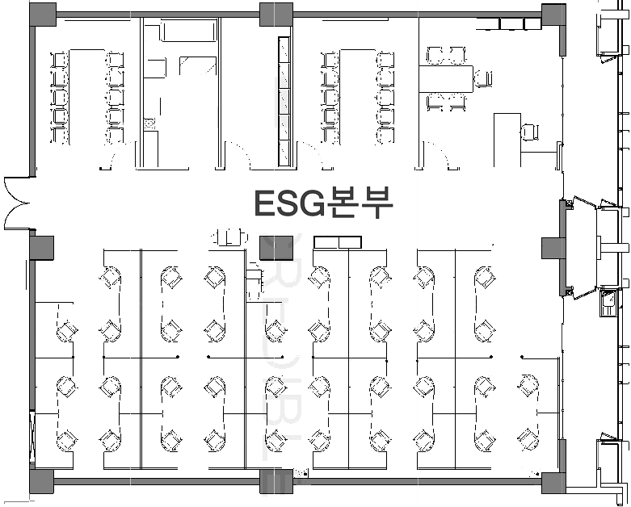
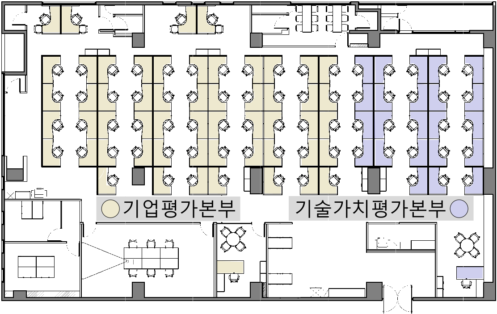

Facility
사무실 및 설비 안내
본사·지역 사무소 위치 및 설비를 안내드립니다.
본사 8층 (임원실·사업본부·지원본부 등)
| 임원실 | 노동조합 | 기업사업본부 | 공공금융본부 | 경영지원본부 | 재무관리실 | 준법감시실 | 사업추진실 | 세미나실·휴게실·회의실 |
|---|

본사 5층 (ESG본부)
| ESG본부 | 임원실 | 휴게실·회의실 | 기사대기실(의전) |
|---|

본사 3층 (기업평가본부·기술가치평가본부)
| 기업평가본부 | 기술가치평가본부 | 임원실 | 휴게실·회의실 |
|---|

본사 10층 (IT전략실 등)
| IT전략실 | DX운영팀 | DX개발팀 | 외주협력업체 | 회의실 |
|---|
지사 안내
부산 지사
부산광역시 부산진구 서전로 8 위워크 5층
광주 지사
광주광역시 서구 상무중앙로 78번길 5-6 영효빌딩 9층
오시는 길
설비·자산 이용
회의실 예약
- [자원] 탭 접속 - 필요한 자원 확인(법인차량·회의실·일반비품)
- 제목·일시·설비 입력 후 등록
- 차량 이용 시 운행일지 작성 필수(위치 : [담당팀 문의])
차량 예약
- [자원] 탭 접속 - 필요한 자원 확인(법인차량·회의실·일반비품)
- 제목·일시·설비 입력 후 등록
- 차량 이용 시 운행일지 작성 필수(위치 : [담당팀 문의])
자산·비품 대여
대여 가능 여부 확인(인력개발팀)
물품대여 관리대장 작성(대장 및 그룹웨어-[자원])
수령·이용
반납·장부 기록
※ 대여가능 자산 : 빔프로젝터(스크린 포함)·포켓와이파이·공구 등
차량 예약
- [자원] 탭 접속 - 필요한 자원 확인(법인차량·회의실·일반비품)
- 제목·일시·설비 입력 후 등록
- 차량 이용 시 운행일지 작성 필수(위치 : [담당팀 문의])